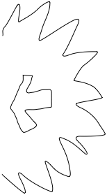
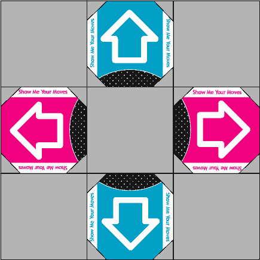

ClickTime™ is a real-time reflex-based action game, where you respond to ClickTime™ Events by moving the mouse and hitting keys at the right time.
ClickTime™ is a real-time reflex-based action game.
ClickTime™ is desktop only.
ClickTime™ has no story.
Graphics - TBD
Sound - Aggresive 8-bit, coordinated with attacks, scoring, mouse movement, and button pressing.
Mechanics - Players will respond to ClickTime™ Events by moving and attacking in the correct direction.
Control - Players can hit WASD to attack up, left, down, or right, and can position themselves by shoving the mouse up, down, left, or right.
Onboarding - TBD
Player Learning - Players will need to learn to quickly respond to events that show up on screen.
Explosions will appear in a single direction, during ClickTime™ events, for decreasing amounts of time.
Arrows will appear in the corresponding directions to the ClickTime™ events, similar to DDR arrows.

Dan Giaime
Major - Game Design and Development
Major - Computer Science
Minor - Mathematics
Year - Sophmore
Skills - Programming, Game physics, Machine Learning